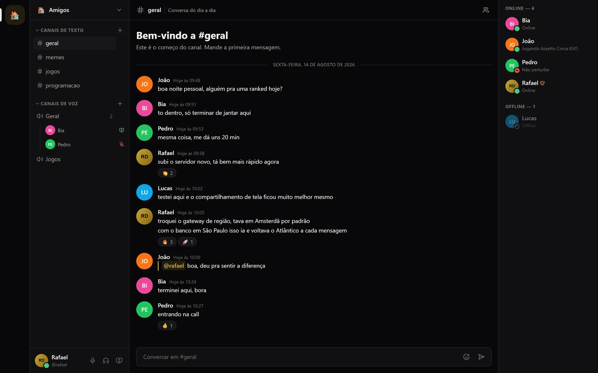
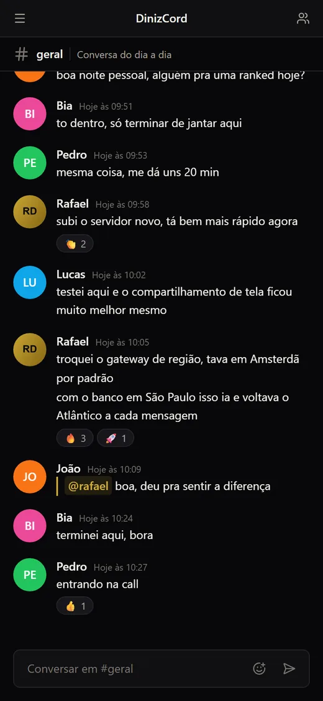

■ □ ×dinizcord.vercel.app


open source · no ar
DinizCord
Plataforma privada de comunicação para grupos pequenos: canais de texto com histórico, voz, compartilhamento de tela e presença em tempo real. Cada grupo sobe a própria instância.
- 116 testes automatizados rodando contra PostgreSQL real, com CI no GitHub Actions.
- Mensagens entre instâncias com LISTEN/NOTIFY do PostgreSQL e tabela de outbox, sem Redis.
- Voz e tela em malha P2P via WebRTC; o servidor faz só a sinalização.
TypeScriptNext.js 16React 19PostgreSQL 17PrismaWebSocketWebRTCDocker